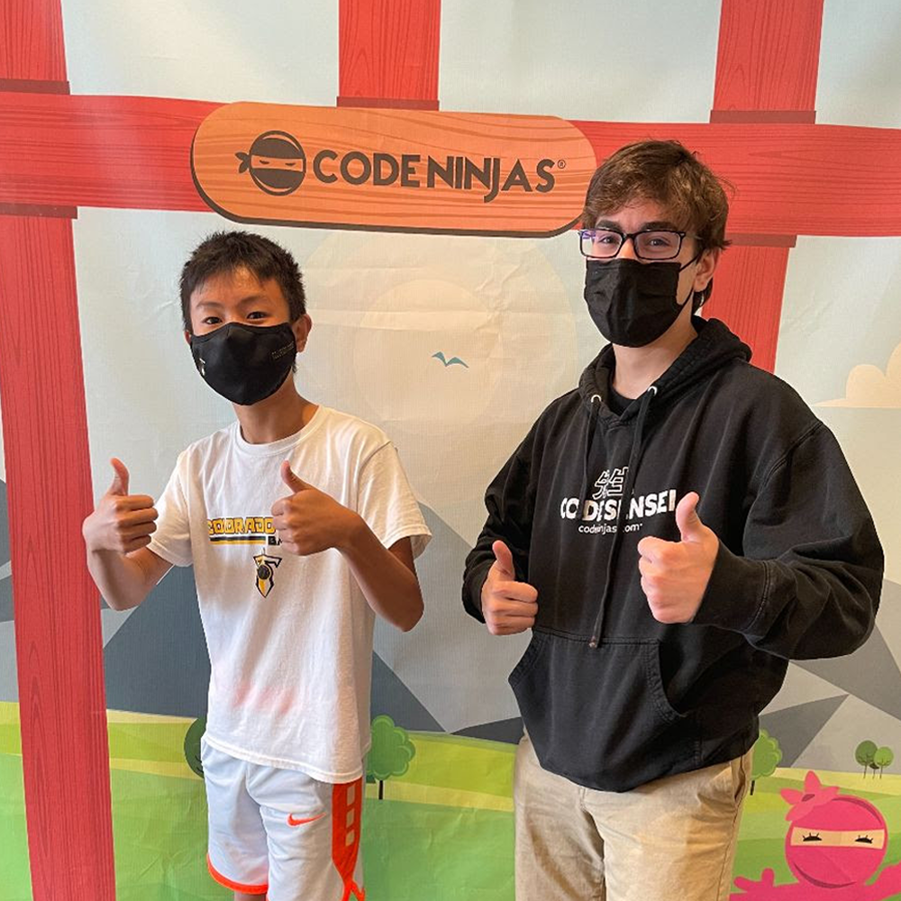

![I worked at Code Ninjas as a Code Sensei from November 2019 - June 2021. As a sensei, I taught kids how to code in Scratch, JavaScript, Lua, C# and Python, by making games. I also helped run the day to day operations in the center which included cleaning, marketing, organizing events, and communicating with parents about our program and their kids. I helped with a transition to online at the start of Covid-19 by starting an online Python class for the students to participate in and helping run other online programs. During my time at Code Ninjas, I also ran summer week and day camps where I organized larger group learning. My time at Code Ninjas was a blast and I loved the connections I got to make with students and the other instructors.](codeninjaicon.jpeg)
×

My name is Jake Torres I am a freshman at Columbia University in New York City studying computer science along the foundations or intelligent systems tracks. Some things I like to do in my spare time are play board games with friends, explore the city, play video games, read, and watch movies. Besides computer science, I am interested in Physics and Neuroscience. A goal I am currently working toward is being able to study abroad during my spring semester of my sophmore year.